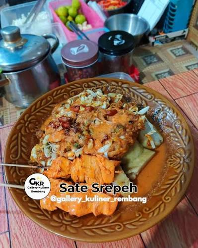
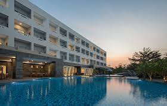
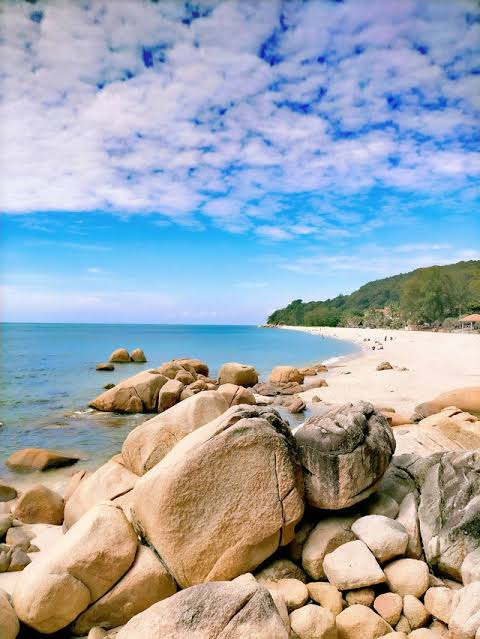
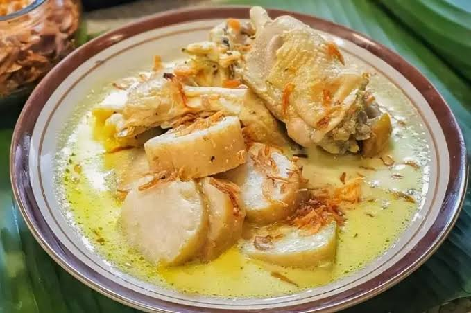
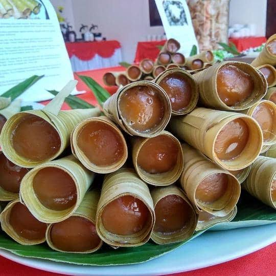

Selamat Datang di Explore Rembang
Temukan berbagai kuliner, penginapan, dan tempat wisata menarik di Rembang.

Kuliner Rembang
Temukan berbagai kuliner yang enak, segar dan memanjakan lidah di Rembang

Penginapan Rembang
Temukan berbagai penginapan yang aman,nyaman dan bersih dirembang.

Tempat Wisata
Temukan berbagai tempat wisata yang indah, dan memanjakan mata di Rembang.
Kuliner
Rembang menyediakan berbagai olahan makanan, jajanan, dan minuman khas Rembang. Rembang memiliki citarasa yang khas dari budaya masyarakat.

Lontong tuyuhan
Lontong Tuyuhan adalah makanan tradisional khas Kabupaten Rembang, Jawa Tengah, yang berasal dari Desa Tuyuhan, Kecamatan Pancur.

Dumbek
Dumbek adalah jajanan tradisional khas Kabupaten Rembang, Jawa Tengah, yang berbentuk menyerupai terompet atau kerucut spiral dan dibungkus menggunakan daun lontar.

Es degan landoh
Es degan Landoh adalah salah satu kuliner legendaris dan pelopor es kelapa muda (degan) yang sangat terkenal di Kabupaten Rembang, Jawa Tengah.
Penginapan
Rembang menyediakan penginapan yang nyaman dan memiliki view pemandangan alam yang indah.

Hotel Pollos
Pollos Hotel & Gallery adalah hotel bintang 3 yang terletak di pusat kota Rembang, tepatnya di Jl. Jenderal Sudirman No. 158, Kabongan Lor, Kec. Rembang, Kabupaten Rembang, Jawa Tengah.

Baiti Homestay
Baiti Homestay Lasem adalah salah satu penginapan populer dan berkonsep syariah yang terletak di Kota Pusaka Lasem, Kabupaten Rembang, Jawa Tengah.

Griya Kost
Griya Kost (atau yang menggunakan nama Griya di Rembang) yang populer di wilayah Kota Rembang
Tempat Wisata
Wisata di Rembang sangat menarik perhatian untuk berkunjung kesana karena Bandung memiliki wista yang bersih dan pemandangan yang indah.

Lembah manah
Lembah Manah adalah destinasi wisata alam tersembunyi di Kabupaten Rembang, Jawa Tengah, yang sering dijuluki sebagai "Swiss-nya Rembang" karena pemandangannya yang asri dan memesona bak negeri dongeng.

Pantai pasir putih wates
Pantai Pasir Putih Wates Rembang - Wikipedia adalah destinasi wisata pantai populer yang berlokasi di Desa Tasikharjo, Kecamatan Kaliori, Kabupaten Rembang, Jawa Tengah, sekitar 5–10 km ke arah barat dari pusat kota Rembang.

Museum R.A Kartini
Museum R.A. Kartini Rembang didirikan pada 21 April 1967 atas prakarsa Bupati Rembang saat itu, Drs. Adnan Widodo, untuk mengenang jasa pahlawan emansipasi wanita R.A. Kartini.